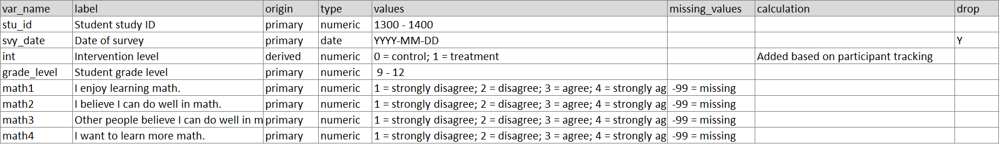

Cleaning sample data in standardized way
By Crystal Lewis in tutorials
February 16, 2023
In the previous two posts of this series we reviewed how to standardize the steps in our data cleaning process to produce consistent datasets across the field of education research, as well as practices we can implement to make our data cleaning workflow more reproducible and reliable. In this final post of the series, I attempt to answer the question, “What does this process look like when implemented in the real world?”. To tackle this question I created a very simple sample dataset based on the following fictitious scenario:
I am managing data for a longitudinal randomized controlled trial (RCT) study. For this RCT, schools are randomized to either a treatment or control group. Students who are in a treatment school receive a program to boost their math self-efficacy. Data is collected on all students in two waves (wave 1 is in the fall of a school year, and wave 2 is collected in the spring). At this point in time, we have collected wave 1 of our student survey on a paper form and we set up a data entry database for staff to enter the information into. Data has been double-entered, checked for entry errors, and has been exported in a csv format (“w1_mathproj_stu_svy_raw.csv”) to a folder (called “data”) where it is waiting to be cleaned.
Doing the prep work
As we learned in the previous post there are several steps I need to take before I begin cleaning my data.
- My team has created a style guide. This guide lays out how my team should structure our directories, name files and folders, as well as name and code variables.
- My team has set up a folder structure following the directions in our style guide and we have named files based on the style guide as well.
- My data dictionary is created and in the dictionary we have named variables and coded values according to the rules laid out in our style guide.
- My data cleaning plan has been created (using our standardized checklist from post 1 as a guide) and my team has approved the transformations I plan to make.
- I have checked the data folder for any readme files and I have found that there is one readme to review.
- And last, my team has been updating our participant tracking database throughout data collection, so I can open this database to confirm that all completed forms are accounted for in my raw data.
So let’s review all of our documents.
Data dictionary

Data cleaning plan

Readme
Participant tracking
It looks like I have all of the documents I need and I am ready to start the data cleaning process!
Data cleaning process
The remainder of this post will provide an overview of how I would clean this data, integrating the steps we spoke about in the previous blog post that help ensure that our data is reproducible and reliable. Following the steps laid out in my data cleaning plan, I can start the process.
Our raw data, along with a sampling of our data cleaning syntax are seen below. The actual example data and the full example syntax can be accessed in this GitHub repository.
Our raw data
# A tibble: 6 x 7
stu_id svy_date grade_level math1 math2 math3 math4
<dbl> <chr> <dbl> <dbl> <chr> <dbl> <dbl>
1 1347 10/1/2022 9 2 "1" 3 3
2 1368 10/1/2022 10 3 "2" 2 2
3 1377 10/1/2022 9 4 "\n4" 4 4
4 1387 10/2/2022 11 3 "3" NA NA
5 1347 10/2/2022 9 2 "2" 4 2
6 1399 10/1/2022 12 4 "1" 3 1
A sample of the beginning of our data cleaning syntax
## Data cleaning date: 2023-02-15
## Cleaned by: Crystal Lewis
## Project: Math intervention project
## Wave: Wave 1
## Data: Student Survey Data
## libraries ##
library(tidyverse)
library(janitor)
library(stringr)
library(labelled)
library(readxl)
library(pointblank)
library(haven)
# Read in the data ----
svy <- read_csv("data/w1_mathproj_stu_svy_raw.csv")
# (01) Review the data ----
glimpse(svy)
# (02) Adjust cases as needed ----
## Check for duplicates - 1347 is duplicated
svy %>%
get_dupes(stu_id)
## Remove duplicates
## Both surveys are complete - arrange by `svy_date` ascending
svy <- svy %>%
arrange(svy_date) %>%
distinct(stu_id, .keep_all = TRUE)
## Check - Review data after dropping the duplicates
svy
# (03) De-identify data ----
# Drop `svy_date`
svy <- svy %>%
select(-svy_date)
# Check - Review after drop
names(svy)
When reviewing this syntax sample, you can see that I have integrated several actions that were mentioned in the previous blog post.
- I am cleaning data using code (in this case R code) to help make my process more reproducible.
- I am using a very simple code template that helps standardize the information that is provided in each data cleaning script (such as who cleaned the date and the date the cleaning occurred).
- I am using a relative file path to read in my data, ensuring that my code is more reproducible.
- If you aren’t working in an environment that sets a consistent working directory for you (like R projects for instance which sets your working directory as the project’s root folder), then you will want to check (and possibly even set) your working directory before using your relative file path to ensure your script is pointing to the correct directory. Just make sure to not permanently set your working directory in your script, again reducing reproducibility.
- I am reviewing my data as soon as I import it. Using the
glimpse()function provides me summary information about my data such as the number of rows and columns, my variable names, and my variable types.- I am happy to see that the number of variables in my data match what I see in my data dictionary (7 primary variables) and the types are all as expected.
- However, I can begin to see that my cases are not matching my participant tracking database. I have 6 cases in my data, but my participant tracking database says only 5 students completed the survey.
- I can also see that my variable type for
math2is not as expected. The variable is character and I expected it to be numeric. There’s something funky going on in this variable. Note that in a real (non-fictitious scenario), this mistake should have been caught and fixed in our double-entry checking process above. But for demonstration purposes, I left this mistake in. :)
- I am using code comments to explain every step of my data cleaning process.
- I am following rules laid out in our team coding style guide to ensure my code is consistent, easy to read, and aligned with how other teammates are writing code.
- As I begin doing transformations, I am making sure that none of my code produces random results. When I drop my duplicates, I make sure to arrange my data to drop my duplicates consistently and in the manner that I have previously laid out in my study protocol (in this case our rule is to keep the first, complete instance of a survey).
- After each transformation is completed, I am checking the outputs to ensure that my code is working as expected.
- And last, although you cannot see it on this code snippet (see full code in GitHub), I am integrating some automation to reduce manual mistakes. In step (13) when I add metadata, I add variable labels through an automated process using our existing data dictionary, rather than writing out all labels manually in our code.
A sample of the end of our data cleaning syntax
# (14) Validate data ----
# Validate data using the `pointblank` package
create_agent(svy) %>%
rows_distinct(columns = vars(stu_id)) %>%
col_vals_between(columns = c(stu_id),
left = 1300, right = 1400, na_pass = TRUE) %>%
col_vals_in_set(columns = c(grade_level),
set = c(9, 10, 11, 12, NA)) %>%
col_vals_in_set(columns = c(int),
set = c(0, 1, NA)) %>%
col_vals_in_set(columns = c(math1:math4),
set = c(1, 2, 3, 4, NA)) %>%
interrogate()
As we get to the end of our syntax, you can see that I have added some data validation code. This code (using the pointblank package here), creates a report that shows me if my data are meeting my expected criteria. Using my data dictionary as a reference, I added several checks:
- Are my cases all distinct? Do I still have duplicate student IDs?
- Are my student IDs all valid (fall within my expected range)?
- Do my
grade_level,intandmathvariables all have values that fall within my expected set of values?
For the sake of brevity, I did not add more criteria here, but in a real situation, there are many more checks that should be done.
After running this code, I get a report that looks like this. In this particular case, no test failed so I can confidently move on to exporting my data.
A sample of the export process
# Export our clean data
write_sav(svy, "data/w1_mathproj_stu_svy_clean.sav")
# Write session information
sessionInfo()
After exporting my data I retrieve our session information. I can either copy and paste that back into our syntax to keep all information in one place, or I can write it to a separate .txt file and store it alongside my syntax.

Ultimately, I export this clean dataset for the purpose of general data sharing, which meets all of the expectations we laid out in our first post.
stu_id grade_level math1 math2 math3 math4 int
1 1347 9 2 1 3 3 1
2 1368 10 3 2 2 2 1
3 1377 9 4 4 4 4 0
4 1387 11 3 3 -99 -99 1
5 1399 12 4 1 3 1 0
You can see here what the embedded metadata looks like in this dataset as well. Note that our R classes for our labelled variables are now labelled numeric.
# A tibble: 5 x 7
stu_id grade_level math1 math2 math3 math4 int
<dbl> <dbl> <hvn_lbl_> <hvn_lbl_> <hvn_lbl_> <hvn_lbl_> <dbl+l>
1 1347 9 2 [disagre~ 1 [strongl~ 3 [agree] 3 [agree] 1 [tre~
2 1368 10 3 [agree] 2 [disagre~ 2 [disagre~ 2 [disagre~ 1 [tre~
3 1377 9 4 [strongl~ 4 [strongl~ 4 [strongl~ 4 [strongl~ 0 [con~
4 1387 11 3 [agree] 3 [agree] -99 (NA) -99 (NA) 1 [tre~
5 1399 12 4 [strongl~ 1 [strongl~ 3 [agree] 1 [strongl~ 0 [con~
Additional steps
At this point, my data cleaning process is complete. However, there are still additional practices I can implement.
- I can have a team member review my code for improvements.
- I can (and should) version and record any future updates to my code and data in my changelog.
- And last, I know for this fictitious study, that I will be collecting this same data again in the spring. After I clean my spring data, I may want to merge both my fall and spring data into a long or wide formatted dataset.
- If I want to merge into wide format, I will need to add a prefix or suffix that makes all of my variable names unique (ex:
math1_w1andmath1_w2). If I want to append my data in long format, I will need to add a new variable to both datasets (such astime) with values of either “wave1” or “wave2” to denote the period of collection. - No matter how I plan to combine my data, after combining, I will need to conduct another round of checks to ensure I still have the correct number of rows and columns.
- If I want to merge into wide format, I will need to add a prefix or suffix that makes all of my variable names unique (ex:
Wrapping it up
This example scenario used a very simplistic dataset and cleaning process. Chances are your data will require a much more involved process in a real scenario.
This post is just an example of how you might clean your data. The tools I use to clean my data, how I write my code, the functions I choose to use, or the way I organize my cleaning steps may be entirely different compared to how someone else cleans their data. And that is okay, as long as we are all implementing similar practices.
I hope this series has been helpful, or at minimum, has sparked some interest in the topic and has helped you to begin thinking about what we should expect from “clean” data, and ways we can begin standardizing data cleaning steps and implement reproducible and reliable practices that ensure we are all producing similar data products, particularly in the field of education research.
As an aside: If you are interested in learning more about data cleaning in R, you can visit this wiki to review examples of functions I commonly use in my data wrangling code.